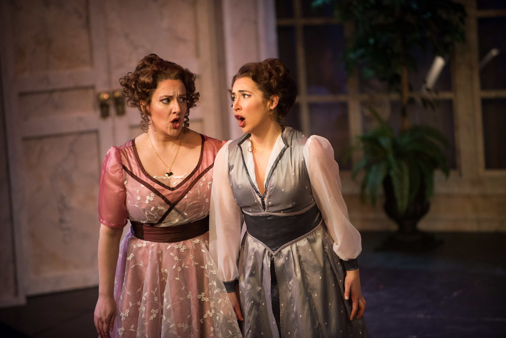

UPCOMING & RECENT EVENTS
*MAY 31 to JUNE 4: American One Acts, double bill with Little Opera Theatre of New York. Ensemble, Jennie cover in Kurt Weill's Down in the Valley; Ensemble in William Grant Still's Highway 1. More information and tickets available here.
*APRIL 1: Zita in Gianni Schicchi with Opera on the James/Lynchburg Symphony, Lynchburg, VA. More information and tickets available here.
*NEW YEAR'S EVE: Ruth in Pirates of Penzance with BARN OPERA in Brandon, VT. available here.
| 2022 | *La Poncia in the world premiere production of La Casa de Bernarda Alba with Cleveland Opera Theater, Cleveland, OH *Mistress Quickly in Falstaff with Raylynmor Opera, Keene, NH (canceled for COVID-19) *Composer in Ariadne auf Naxos with BARN Opera, Brandon, VT *Messiah at St. Joseph's Church, Bronxville, NY |
| 2021 | *Mistress Quickly in Falstaff produced by Social Distance Opera, recording on SoundCloud *Opera Singer in Voyeur: The Windows of Toulouse-Lautrec produced by Bated Breath Theater Company, New York, NY *Mezzo-soprano in Littles: Princes, Match Girls & Engines that Could, (excerpts from operas by Maia Aprahamian) produced by Bagaduce Music Center, Deer Isle, ME *Little Buttercup in H.M.S. Pinafore with BARN OPERA in Brandon, VT/td> |
| 2020 | *Ensemble Member in Verdi by Vegetables produced by Resonance Works | Pittsburgh, online streaming |
| 2019 | *Anna (Second Woman) in Death of Classical's production of Dido and Aeneas, Brooklyn, NY *Economides & ensemble member in NYCO's workshop of Stonewall, New York, NY |
| 2018 | *Flora in Syracuse Opera's production of La traviata, Syracuse, NY *Dorabella in Opera on the James's production of Così fan tutte, Lynchburg, VA *Alto soloist in Kodály's Missa Brevis with The Glass Menagerie, New York, NY |
| 2017 | *Guest Artist with Baldwin Wallace University Old Prioress in Dialogues of Carmelites, Cleveland, OH *Filippyevna in Syracuse Opera's production of Eugene Onegin, Syracuse, NY *Mistress Quickly in Falstaff with Resonance Works | Pittsburgh, Pittsburgh, PA *Mercédès in Syracuse Opera's production of Carmen, Syracuse, NY *Alto soloist in Ein feste burg ist unser Gott (BWV 80) with Symphoria, Syracuse, NY |
| 2016 | *Elizabeth in the professional premiere of Sweets by Kate with Marble City Opera, Knoxville, TN *Mass in B-Minor with Sara Jobin at The Abode of the Message, New Lebanon, NY *Das Lied von der Erde with Resonance Works | Pittsburgh, Pittsburgh, PA |
| 2015 | *Mercédès in Carmen with Opera on the James, Lynchburg, VA *Auntie in Peter Grimes with Madison Lyric Stage, Madison, CT *Betty in world premiere of Cries and Whispers with International Brazilian Opera Company, NYC |
| 2014 | *Winner of Second Prize in the professional division in G. Gershwin International Competition, NYC *Magnificats by both Bach and Vaughan Williams with Akron Symphony, Akron, OH *Zita in Gianni Schicchi with Raylynmor Opera, Keene, NH |
Images
